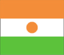

{kind=link}


![[Country map of Niger]](../maps/ng-map.jpg)
| Niger |  |
|
| | |
| Introduction |
Background: Not until 1993, 33 years after independence from France, did Niger hold its first free and open elections. A 1995 peace accord ended a five-year Tuareg insurgency in the north. Coups in 1996 and 1999 were followed by the creation of a National Reconciliation Council that effected a transition to civilian rule in December 1999.
| Geography |
Location: Western Africa, southeast of Algeria
Geographic coordinates: 16 00 N, 8 00 E
Map references: Africa
Area:
total:
1.267 million sq km
land:
1,266,700 sq km
water:
300 sq km
Area - comparative: slightly less than twice the size of Texas
Land boundaries:
total:
5,697 km
border countries:
Algeria 956 km, Benin 266 km, Burkina Faso 628 km, Chad 1,175 km, Libya 354 km, Mali 821 km, Nigeria 1,497 km
Coastline: 0 km (landlocked)
Maritime claims: none (landlocked)
Climate: desert; mostly hot, dry, dusty; tropical in extreme south
Terrain: predominately desert plains and sand dunes; flat to rolling plains in south; hills in north
Elevation extremes:
lowest point:
Niger River 200 m
highest point:
Mont Greboun 1,944 m
Natural resources: uranium, coal, iron ore, tin, phosphates, gold, petroleum
Land use:
arable land:
3%
permanent crops:
0%
permanent pastures:
7%
forests and woodland:
2%
other:
88% (1993 est.)
Irrigated land: 660 sq km (1993 est.)
Natural hazards: recurring droughts
Environment - current issues: overgrazing; soil erosion; deforestation; desertification; wildlife populations (such as elephant, hippopotamus, giraffe, and lion) threatened because of poaching and habitat destruction
Environment - international agreements:
party to:
Biodiversity, Climate Change, Desertification, Endangered Species, Environmental Modification, Hazardous Wastes, Nuclear Test Ban, Ozone Layer Protection, Wetlands
signed, but not ratified:
Climate Change-Kyoto Protocol, Law of the Sea
Geography - note: landlocked
| People |
Population: 10,075,511 (July 2000 est.)
Age structure:
0-14 years:
48% (male 2,461,391; female 2,373,617)
15-64 years:
50% (male 2,445,369; female 2,563,839)
65 years and over:
2% (male 121,570; female 109,725) (2000 est.)
Population growth rate: 2.75% (2000 est.)
Birth rate: 51.45 births/1,000 population (2000 est.)
Death rate: 23.17 deaths/1,000 population (2000 est.)
Net migration rate: -0.75 migrant(s)/1,000 population (2000 est.)
Sex ratio:
at birth:
1.03 male(s)/female
under 15 years:
1.04 male(s)/female
15-64 years:
0.95 male(s)/female
65 years and over:
1.11 male(s)/female
total population:
1 male(s)/female (2000 est.)
Infant mortality rate: 124.9 deaths/1,000 live births (2000 est.)
Life expectancy at birth:
total population:
41.27 years
male:
41.43 years
female:
41.11 years (2000 est.)
Total fertility rate: 7.16 children born/woman (2000 est.)
Nationality:
noun:
Nigerien(s)
adjective:
Nigerien
Ethnic groups: Hausa 56%, Djerma 22%, Fula 8.5%, Tuareg 8%, Beri Beri (Kanouri) 4.3%, Arab, Toubou, and Gourmantche 1.2%, about 1,200 French expatriates
Religions: Muslim 80%, remainder indigenous beliefs and Christians
Languages: French (official), Hausa, Djerma
Literacy:
definition:
age 15 and over can read and write
total population:
13.6%
male:
20.9%
female:
6.6% (1995 est.)
| Government |
Country name:
conventional long form:
Republic of Niger
conventional short form:
Niger
local long form:
Republique du Niger
local short form:
Niger
Data code: NG
Government type: republic
Capital: Niamey
Administrative divisions: 7 departments (departements, singular - departement), and 1 capital district* (capitale district); Agadez, Diffa, Dosso, Maradi, Niamey*, Tahoua, Tillaberi, Zinder
Independence: 3 August 1960 (from France)
National holiday: Republic Day, 18 December (1958)
Constitution: the constitution of January 1993 was revised by national referendum on 12 May 1996 and again by referendum on 18 July 1999
Legal system: based on French civil law system and customary law; has not accepted compulsory ICJ jurisdiction
Suffrage: 18 years of age; universal
Executive branch:
chief of state:
President Mamadou TANDJA (since 22 December 1999); note - the president is both chief of state and head of government
head of government:
President Mamadou TANDJA (since 22 December 1999); note - the president is both chief of state and head of government; Prime Minister Hama AMADOU (since 31 December 1999) was appointed by the president and shares some executive responsibilities with the president
note:
President Ibrahim BARE was assassinated on 9 April 1999; subsequent elections held under the nine-month provisional government of Major Daouda Mallam WANKE
cabinet:
24-member cabinet appointed by President TANDJA
elections:
president elected by popular vote for a five-year term; last held 24 November 1999 (next to be held NA 2004)
election results:
Mamadou TANDJA elected president; percent of vote - Mamadou TANDJA 60%, Mahamadou ISSOUFOU 40%
Legislative branch:
unicameral National Assembly (83 seats, members elected by popular vote for five-year terms)
elections:
last held 24 November 1999 (next to be held NA 2004)
election results:
percent of vote by party - NA; seats by party - MNSD-Nassara 38, CDS-Rahama 17, PNDS-Tarayya 16, RDP-Jama'a 8, ANDPS-Zaman Lahia 4
Judicial branch: State Court or Cour d'Etat; Court of Appeal or Cour d'Appel
Political parties and leaders: Democratic Rally of the People-Jama'a or RDP-Jama'a [Hamid ALGABID]; Democratic and Social Convention-Rahama or CDS-Rahama [Mahamane OUSMANE]; Movement for Development and Progress-Alkwali or MDP-Alkwali [Mai Manga BOUCAR, chairman]; National Movement for a Developing Society-Nassara or MNSD-Nassara [Tandja MAMADOU, chairman]; National Union of Independents for Democratic Renewal or UNIRD [Moutari MOUSSA]; Nigerien Alliance for Democracy and Social Progress-Zaman Lahiya or ANDPS-Zaman Lahiya [Moumouni Adamou DJERMAKOYE]; Nigerien Democratic Front-Mutunci or FDN-Mutunci [Ide OUMAROU]; Nigerien Party for Democracy and Socialism-Tarayya or PNDS-Tarayya [Mahamadou ISSOUFOU]; Nigerien Social Democrat Party-Alheri or PSDN-Alheri [Malam Adji WAZIRI]; Party for People's Dignity-Daraja or PDP-Daraja [Ali TALBA, chairman]; Union of Democratic Patriots and Progressives-Chamoua or UPDP-Chamoua [Professor Andre' SALIFOU, chairman]; Union for Democracy and Social Progress-Amana or UDPS-Amana [Mohamed ABDULLAHI]; Union of Popular Forces for Democracy and Progress-Sawaba or UFPDP-Sawaba [Djibo BAKARY]; Workers' Movement Party-Albarka or PMT-Albarka [Omar Idi ANGO]
International organization participation: ACCT, ACP, AfDB, CCC, ECA, ECOWAS, Entente, FAO, FZ, G-77, IAEA, IBRD, ICAO, ICFTU, ICRM, IDA, IDB, IFAD, IFC, IFRCS, ILO, IMF, Intelsat, Interpol, IOC, ITU, MIPONUH, NAM, OAU, OIC, OPCW, UN, UNCTAD, UNESCO, UNIDO, UPU, WADB, WAEMU, WCL, WFTU, WHO, WIPO, WMO, WToO, WTrO
Diplomatic representation in the US:
chief of mission:
Ambassador Joseph DIATTA
chancery:
2204 R Street NW, Washington, DC 20008
telephone:
[1] (202) 483-4224 through 4227
Diplomatic representation from the US:
chief of mission:
Ambassador Barbro OWENS-KIRKPATRICK
embassy:
Rue Des Ambassades, Niamey
mailing address:
B. P. 11201, Niamey
telephone:
[227] 72 26 61 through 72 26 64
FAX:
[227] 73 31 67
Flag description: three equal horizontal bands of orange (top), white, and green with a small orange disk (representing the sun) centered in the white band; similar to the flag of India, which has a blue spoked wheel centered in the white band
| Economy |
Economy - overview: Niger is a poor, landlocked Sub-Saharan nation, whose economy centers on subsistence agriculture, animal husbandry, reexport trade, and increasingly less on uranium, its major export since the 1970s. The 50% devaluation of the West African franc in January 1994 boosted exports of livestock, cowpeas, onions, and the products of Niger's small cotton industry. The government relies on bilateral and multilateral aid - which was suspended following the April 1999 coup d'etat - for operating expenses and public investment. Short-term prospects depend on upcoming negotiations with the World Bank and the IMF on debt relief and extended aid.
GDP: purchasing power parity - $9.6 billion (1999 est.)
GDP - real growth rate: 2% (1999 est.)
GDP - per capita: purchasing power parity - $1,000 (1999 est.)
GDP - composition by sector:
agriculture:
40%
industry:
18%
services:
42% (1998)
Population below poverty line: NA%
Household income or consumption by percentage share:
lowest 10%:
3%
highest 10%:
29.3% (1992)
Inflation rate (consumer prices): 4.8% (1999)
Labor force: 70,000 receive regular wages or salaries
Labor force - by occupation: agriculture 90%, industry and commerce 6%, government 4%
Unemployment rate: NA%
Budget:
revenues:
$377 million, including $146 million from foreign sources
expenditures:
$377 million, including capital expenditures of $105 million (1999 est.)
Industries: uranium mining, cement, brick, textiles, food processing, chemicals, slaughterhouses
Industrial production growth rate: NA%
Electricity - production: 180 million kWh (1998)
Electricity - production by source:
fossil fuel:
100%
hydro:
0%
nuclear:
0%
other:
0% (1998)
Electricity - consumption: 363 million kWh (1998)
Electricity - exports: 0 kWh (1998)
Electricity - imports: 196 million kWh (1998)
Agriculture - products: cowpeas, cotton, peanuts, millet, sorghum, cassava (tapioca), rice; cattle, sheep, goats, camels, donkeys, horses, poultry
Exports: $269 million (f.o.b., 1997)
Exports - commodities: uranium ore 65%, livestock products, cowpeas, onions (1998 est.)
Exports - partners: US, Greece, Japan, France, Nigeria, Benin
Imports: $295 million (c.i.f., 1997)
Imports - commodities: consumer goods, primary materials, machinery, vehicles and parts, petroleum, cereals
Imports - partners: France, Cote d'Ivoire, US, Benelux, Nigeria
Debt - external: $1.3 billion (1999 est.)
Economic aid - recipient: $222 million (1995)
Currency: 1 Communaute Financiere Africaine franc (CFAF) = 100 centimes
Exchange rates:
Communaute Financiere Africaine francs (CFAF) per US$1 - 670 (January 2000), 560.01 (January 1999), 589.95 (1998), 583.67 (1997), 511.55 (1996), 499.15 (1995)
note:
since 1 January 1999, the CFAF is pegged to the euro at a rate of 655.957 CFA francs per euro
Fiscal year: calendar year
| Communications |
Telephones - main lines in use: 13,000 (1995)
Telephones - mobile cellular: 0 (1995)
Telephone system:
small system of wire, radiotelephone communications, and microwave radio relay links concentrated in southwestern area
domestic:
wire, radiotelephone communications, and microwave radio relay; domestic satellite system with 3 earth stations and 1 planned
international:
satellite earth stations - 2 Intelsat (1 Atlantic Ocean and 1 Indian Ocean)
Radio broadcast stations: AM 5, FM 5, shortwave 4 (1998)
Radios: 680,000 (1997)
Television broadcast stations: 10 (plus seven low-power repeaters) (1997)
Televisions: 125,000 (1997)
Internet Service Providers (ISPs): 1 (1999)
| Transportation |
Railways: 0 km
Highways:
total:
10,100 km
paved:
798 km
unpaved:
9,302 km (1996 est.)
Waterways: the Niger is navigable 300 km from Niamey to Gaya on the Benin frontier from mid-December through March
Ports and harbors: none
Airports: 27 (1999 est.)
Airports - with paved runways:
total:
9
2,438 to 3,047 m:
2
1,524 to 2,437 m:
6
under 914 m:
1 (1999 est.)
Airports - with unpaved runways:
total:
18
1,524 to 2,437 m:
1
914 to 1,523 m:
15
under 914 m:
2 (1999 est.)
| Military |
Military branches: Army, Air Force, National Gendarmerie, Republican Guard, National Police
Military manpower - military age: 18 years of age
Military manpower - availability:
males age 15-49:
2,137,181 (2000 est.)
Military manpower - fit for military service:
males age 15-49:
1,155,054 (2000 est.)
Military manpower - reaching military age annually:
males:
105,884 (2000 est.)
Military expenditures - dollar figure: $20 million (FY96)
Military expenditures - percent of GDP: 1.1% (FY96)
| Transnational Issues |
Disputes - international: Libya claims about 19,400 sq km in northern Niger; delimitation of international boundaries in the vicinity of Lake Chad, the lack of which led to border incidents in the past, has been completed and awaits ratification by Cameroon, Chad, Niger, and Nigeria